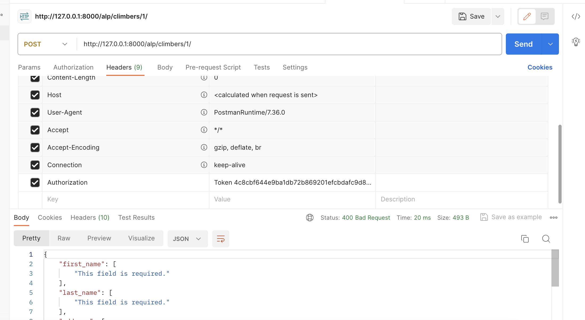
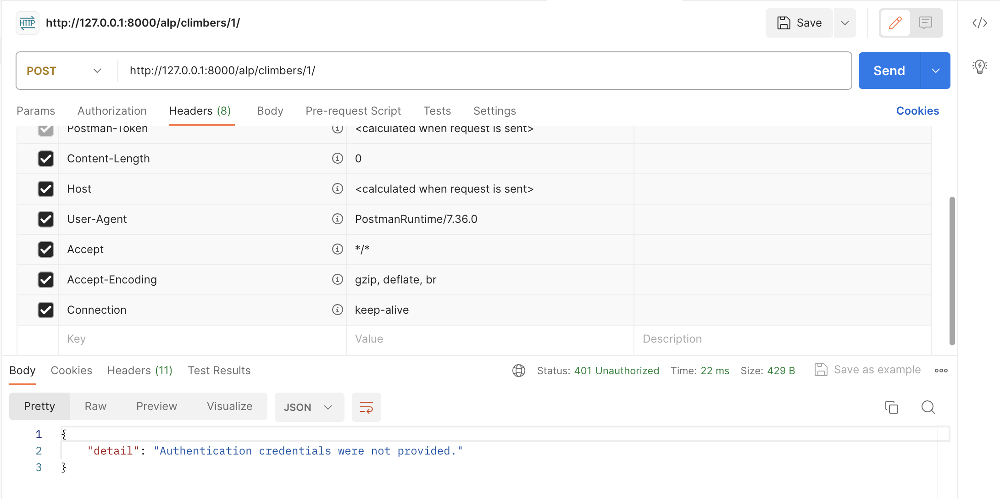

Views:
Информация по всем альпинистам/конкретному:
class ClimberDetail(APIView):
permission_classes = [IsAuthenticatedOrReadOnly]
def get_object(self, pk):
try:
return Climber.objects.get(pk=pk)
except Climber.DoesNotExist:
raise Http404
def get(self, request, pk, format=None):
climbers = self.get_object(pk)
serializer = ClimberSerializer(climbers)
return Response(serializer.data)
def post(self, request, pk, format=None):
climber = self.get_object(pk)
serializer = ClimberSerializer(climber, data=request.data)
if serializer.is_valid():
serializer.save()
return Response(serializer.data)
return Response(serializer.errors, status=status.HTTP_400_BAD_REQUEST)
def delete(self, request, pk, format=None):
climber = self.get_object(pk)
climber.delete()
return Response(status=status.HTTP_204_NO_CONTENT)
class ClimberList(APIView):
permission_classes = [IsAuthenticatedOrReadOnly]
def get(self, request, format=None):
climbers = Climber.objects.all()
serializer = ClimberSerializer(climbers, many=True)
return Response(serializer.data)
def post(self, request, format=None):
serializer = ClimberSerializer(data=request.data)
if serializer.is_valid():
serializer.save()
return Response(serializer.data, status=status.HTTP_201_CREATED)
return Response(serializer.errors, status=status.HTTP_400_BAD_REQUEST)
Информация про группы, позволяющая в дальнейшем редактировать вложенные списки участников походов и добавлять постфактум комментарий
class GroupsDetailView(APIView):
permission_classes = [IsAuthenticatedOrReadOnly]
def get_object(self, pk):
try:
return Group.objects.get(pk=pk)
except Group.DoesNotExist:
raise Http404
def get(self, request, pk, format=None):
groups = self.get_object(pk)
serializer = GroupGetSerializer(groups)
return Response(serializer.data)
def post(self, request, pk, format=None):
group = self.get_object(pk)
serializer = GroupPostSerializer(group, data=request.data)
if serializer.is_valid():
serializer.save()
return Response(serializer.data)
return Response(serializer.errors, status=status.HTTP_400_BAD_REQUEST)
def delete(self, request, pk, format=None):
group = self.get_object(pk)
group.delete()
return Response(status=status.HTTP_204_NO_CONTENT)
class GroupsListView(APIView):
permission_classes = [IsAuthenticatedOrReadOnly]
def get(self, request, format=None):
groups = Group.objects.all()
serializer = GroupGetSerializer(groups, many=True)
return Response(serializer.data)
def post(self, request, format=None):
serializer = GroupPostSerializer(data=request.data)
if serializer.is_valid():
serializer.save()
return Response(serializer.data, status=status.HTTP_201_CREATED)
return Response(serializer.errors, status=status.HTTP_400_BAD_REQUEST)
Информация про конкретные восхождения
class AscensionListView(ListAPIView):
permission_classes = [IsAuthenticatedOrReadOnly]
queryset = Ascension.objects.all()
serializer_class = AscensionSerializer
class AscensionDetailView(RetrieveAPIView):
permission_classes = [IsAuthenticated]
queryset = Ascension
serializer_class = AscensionSerializer
# permission_classes = (IsAuthenticated, )
def get_queryset(self):
return Ascension.objects.filter(id=self.kwargs['pk'])
Информация про горы
class MountainDetailView(APIView):
permission_classes = [IsAuthenticatedOrReadOnly]
def get_object(self, pk):
try:
return Mountain.objects.get(pk=pk)
except Mountain.DoesNotExist:
raise Http404
def get(self, request, pk, format=None):
mountains = self.get_object(pk)
serializer = MountainSerializer(mountains)
return Response(serializer.data)
def post(self, request, pk, format=None):
mountain = self.get_object(pk)
serializer = MountainSerializer(mountain, data=request.data)
if serializer.is_valid():
serializer.save()
return Response(serializer.data)
return Response(serializer.errors, status=status.HTTP_400_BAD_REQUEST)
def delete(self, request, pk, format=None):
mountain = self.get_object(pk)
mountain.delete()
return Response(status=status.HTTP_204_NO_CONTENT)
class MountainsListView(APIView):
permission_classes = [IsAuthenticatedOrReadOnly]
def get(self, request, format=None):
mountains = Mountain.objects.all()
serializer = MountainSerializer(mountains, many=True)
return Response(serializer.data)
def post(self, request, format=None):
serializer = MountainSerializer(data=request.data)
if serializer.is_valid():
serializer.save()
return Response(serializer.data, status=status.HTTP_201_CREATED)
return Response(serializer.errors, status=status.HTTP_400_BAD_REQUEST)
Блок клубов
class ClubsListView(ListAPIView):
permission_classes = [IsAuthenticatedOrReadOnly]
queryset = Club.objects.all()
serializer_class = ClubSerializer
class ClubDetailView(RetrieveAPIView):
permission_classes = [IsAuthenticatedOrReadOnly]
queryset = Club
serializer_class = ClubSerializer
def get_queryset(self):
return Club.objects.filter(id=self.kwargs['pk'])
Блок участия в конкретном походе
class AscentParticipationAPIView(viewsets.ModelViewSet):
permission_classes = [IsAuthenticatedOrReadOnly]
queryset = AscentParticipation.objects.all()
serializer_class = AscentParticipationSerializer
# permission_classes = (IsAuthenticated, )
class AscentParticipationDetailView(RetrieveAPIView):
permission_classes = [IsAuthenticatedOrReadOnly]
queryset = AscentParticipation
serializer_class = AscentParticipationSerializer
def get_queryset(self):
return AscentParticipation.objects.filter(id=self.kwargs['pk'])
...про авторизацию:
Почти все страницы доступны в режиме IsAuthenticatedOrReadOnly, чтобы посмотреть-то посмотрел, но, в случае чего, ничего не сломал. 
Но без регистрации, например, нельзя отследить список группы 